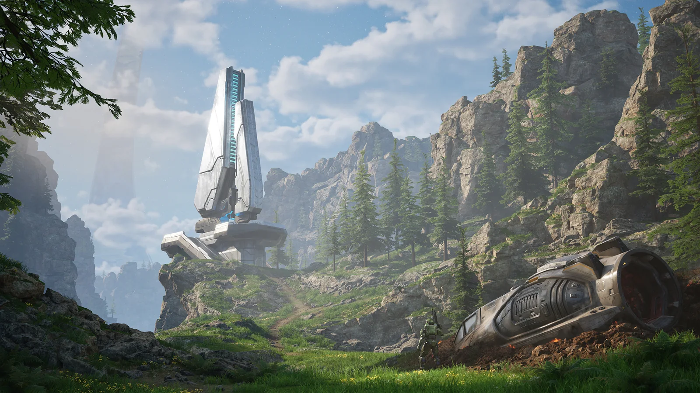

КАТАЛОГ НЕЗАВИСИМЫХ ПРОЕКТОВ
Найди свой
следующий мир.
Игры, интерактивные истории и цифровые эксперименты — от маленьких команд с большими идеями.

01 В ФОКУСЕ
ВЫБОР РЕДАКЦИИ
ECHOES
OF TITAN
Исследуйте руины цивилизации, верните к жизни древние механизмы и узнайте, почему небо над Титаном больше не движется.
94%положительных
отзывов
отзывов
12человек
в команде
в команде
БЫСТРЫЙ МАРШРУТ
По настроению
Три повода остаться
и исследовать каталог.
ПОДОБРАНО ДЛЯ ВАС
Все проекты 6
Здесь пока пусто
Попробуйте изменить запрос или выбрать другой жанр.
Не знаете, с чего начать?